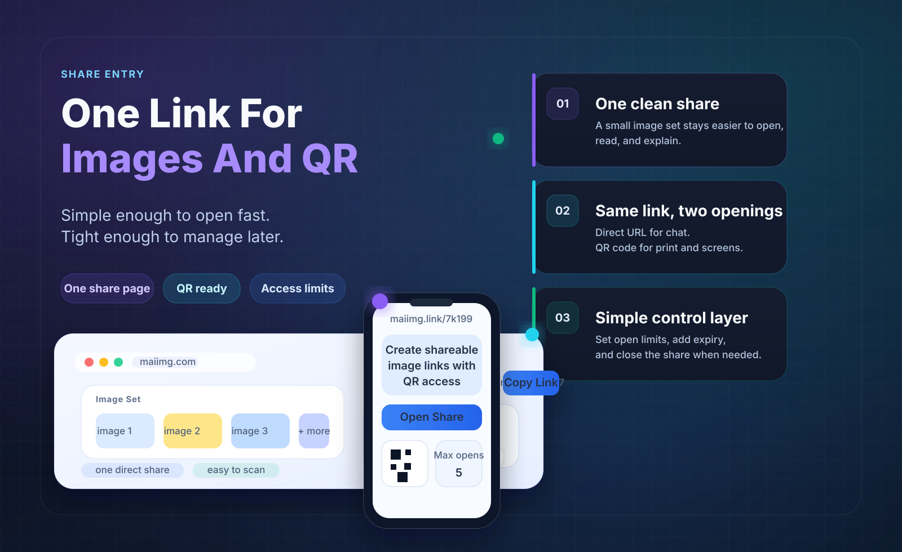

Order
Put the best or clearest image first
The first image tells people they opened the right set. For events, start with the group or highlight shot. For products or listings, start with the main view.

An online photo album does not need to be a giant library. For most sharing jobs, it can be one focused set, one link, one QR code, and a few controls that decide how long the album stays open.
Family highlights, event photos, listing images, or a simple client preview.
The album opens from a direct URL and a matching QR code generated from the same share.
Add an expiry or revoke the share when the album no longer needs to be open.
Choose up to 25 photos or short videos that belong together. If the album has multiple topics, split it into multiple shares.
Create one browser link and one QR code from the same share. Use the link online and the QR code in physical spaces.
Use a view limit or expiry when the album is temporary, private, or meant for a specific review period.
The first image tells people they opened the right set. For events, start with the group or highlight shot. For products or listings, start with the main view.

An album link is easier to send, resend, and close than a pile of attachments. It also gives you one place to point people when they ask for the photos later.
Some albums can stay available longer. Others are temporary: a school event, a proof set, or a quick family batch. Choose a window before sending so the album has a clean ending.

Upload a focused set, generate one link and one QR code, set the access window, and send the album without scattering files everywhere.
Try MaiIMG